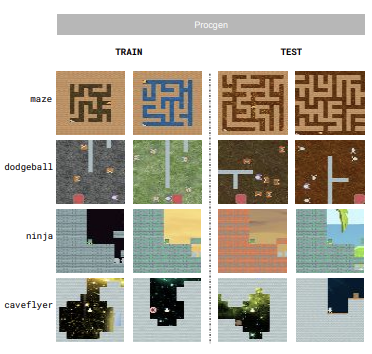
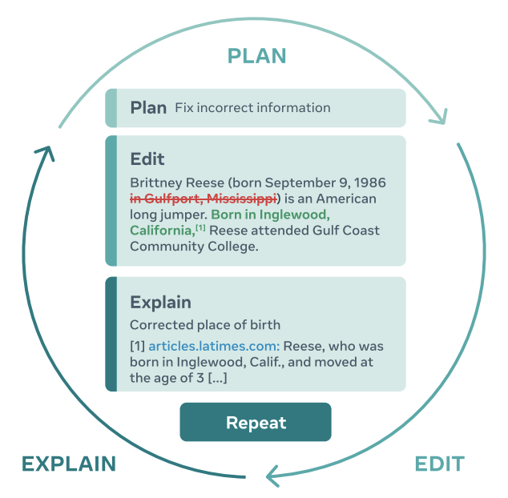

|
Qingfei You
I am a Research Engineer at FAIR (Meta) based in London,
where I have been working on LLM inference optimization and dataset, and generalization in Offline
RL. I got my master degree in Télécom ParisTech, during which I interned in Cornis to build
automated
system to inspect windmill blades. My focus is now on deep learning and system optimization.
Previously, I obtained a B.E. in Electronics Engineering from Southeast University, where I got National Scholarship twice.
Email /
Google Scholar
/
GitHub /
Twitter /
LinkedIn
|
|
Research
I'm interested in Deep Learning, Generative AI, and scaling systems to boost research and deploy into production.
|
|

|
A Study of Generalization in Offline Reinforcement Learning
Ishita Mediratta*, Qingfei
You*, Minqi Jiang, Roberta
Raileanu
ICLR, 2024
GenPlan Workshop, NeurIPS, 2023
paper
/
code
Assess generalization capabilities of most widely used offline learning algorithms and introduce offline
RL datasets from Procgen and Webshop environments to facilitate research on generalization in Offline RL
algorithms.
|
|

|
PEER: A Collaborative Language Model
Timo Schick, Jane Dwivedi-Yu, Zhengbao Jiang, Fabio Petroni, Patrick Lewis, Gautier Izacard, Qingfei
You, Christoforos Nalmpantis, Edouard Grave, Sebastian Riedel
arXiv, 2022
paper
Introduce a collaborative language model that is trained to imitate the entire writing process itself:
PEER can write drafts, add suggestions, propose edits and provide explanations for its actions.
|
|
{kind=link}